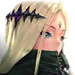

Ella Feu
Debuff de défense spécial (niveau 5), marque (niveau 5), buff d'attaque (niveau 5), effet de vague d'attaque (niveau 3), potentiel d'augmentation de la jauge de combo des attaquants ou soutiens lorsqu'un tank est frappé (10%/6sec)
Mildred Forêt
Debuff de vitesse (niveau 5), effet de vague de vitesse (niveau 3), debuff de défense (niveau 5), marque spécial de potentiel spécial 5 (niveau 5)
 Ézèbel Feu
Ézèbel Feu
effet de vague d'attaque (niveau 2), buff d'attaque (niveau 5), debuff de défense (niveau 3-5), effet de vague de défense (niveau 3), passif d'augmentation da jauge de combo des attaquants lorsqu'une aptitude inflige un coup critique, bonus d'équipe d'attaque (35%)
[A]Leto Eau
Buff de défense (niveau 5), effet de vague de défense (niveau 2), buff d'attaque (niveau 3-5), debuff de vitesse (niveau 5), debuff de défense (niveau 3-5), effet de vague d'attaque (niveau 3), passif d'augmentation de la jauge de combo de toutes les classes sauf soutien lorsqu'un tank est frappé (14%/5sec), bonus d'équipe de vitesse (32%)
 Blavatsky Ténèbres
Blavatsky Ténèbres
Buff de défense (niveau 5), debuff de défense (niveau 3-5), buff de vitesse (niveau 5), effet de vague de vitesse (niveau 3), potentiel d'augmentation de la jauge de combo des attaquants ou soutiens lorsqu'un tank est frappé (10%/6sec)
Ignis Lumière
Debuff de défense (niveau 5), marque (niveau 5), effet de vague d'attaque (niveau 3), passif d'augmentation de la jauge de combo de toutes les classes sauf soutien lorsqu'un tank est frappé (7%/3sec), bonus d'équipe de vitesse (25%)
Équipement
Double set vent afin de maximiser la réinitialisation du temps de recharge global à 70%
Gants et colliers en vitesse
Casque en PV/Défense
Botte et anneau en PV/Défense/Précision
Objectifs : 350 Vitesse, 250% Précision (au total), le reste en PV ou Défense.
Potentiels normaux
2 fois réduction du taux de frappe oblique des serviteurs d'attaque adverse.
3 fois augmentation du taux d'activation de marque secondaire contre un serviteur d'attaque, suffit à maximiser le taux de marque secondaire à 85%.
Ce qui laisse le potentiel spécial 3 libre pour un buff de début de combat par exemple.
Pour le tank, si vous voulez l'utiliser pour lancer la combo de votre attaquant en raid de guilde, Lucrecia est tout indiquée. elle existe dans tous les éléments et a la bonne marque secondaire. Teresia est une autre option. A jouer avec 4 sets chaîne pour les raids de guilde. Si votre attaquant bénéficie d'un autre tank, utilisez-le, à minima en raid mondial, éventuellement en raid de guilde, surtout s'il à la bonne marque secondaire.
En excluant le tank en raid mondial, tous vos serviteurs doivent avoir une marque primaire différente.
La marque primaire de votre attaquant doit correspondre à la marque secondaire de tous vos autres serviteurs, afin que ceux-ci le fasse jouer un maximum. Idéalement, l'attaquant devrait aussi avoir cette même marque secondaire, afin de ne pas faire jouer un autre serviteur, ce qui serait une perte de temps et donc de dégâts.
Pour raid il vous faut, pour une équipe standard, 1 attaquant, 1 tank, 2 ou 3 soutiens selon si vous êtes en raid mondial (3) ou raid de guilde (2).
En raid mondial, comme il n'y a que 4 marques pour 5 serviteurs, on bloquera généralement le tank, qui ne devra en aucun cas avoir la même marque primaire que l'attaquant. Pour le bloquer, appuyez sur son portrait en jeu. Vous verrez apparaître un cadenas sur son aptitude de combo (1 pression) ou sur toutes ses aptitudes (2 pressions).
En raid de guilde, le tank peut tout aussi bien activer sa marque secondaire pour faire jouer l'attaquant.